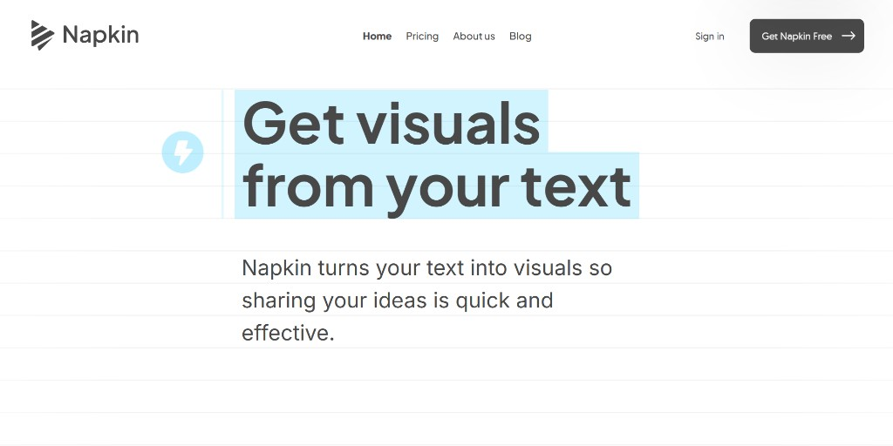
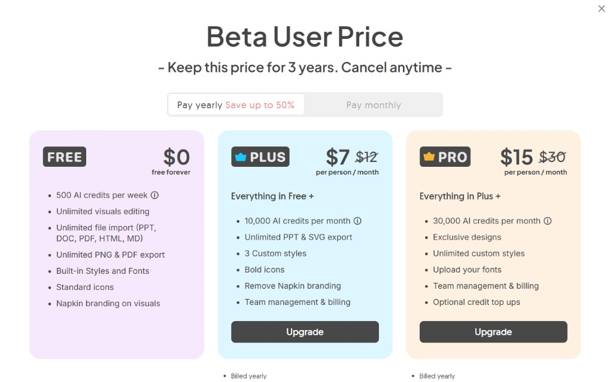
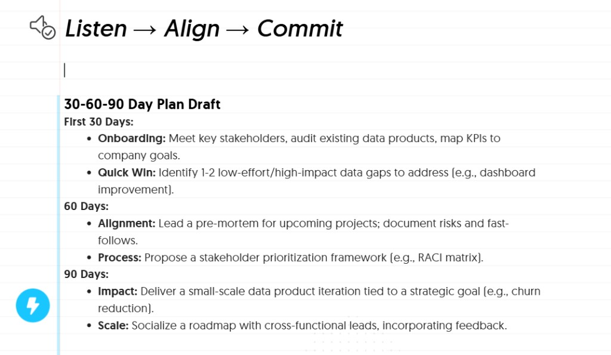
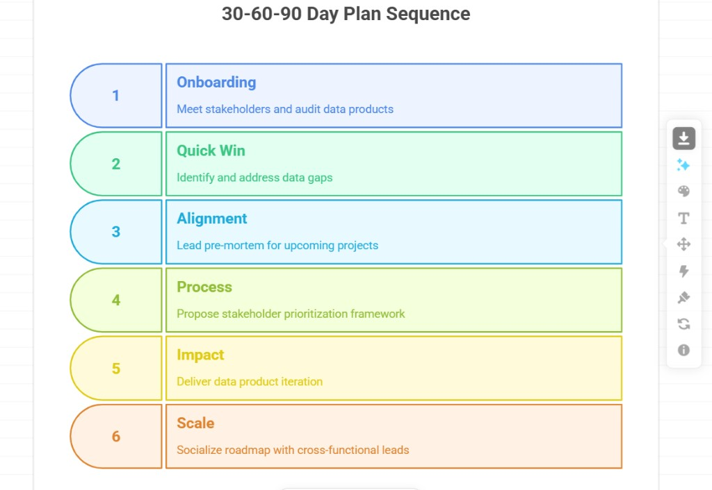

← → or Space to navigate
Product Opportunity Analysis
When you're blocked on a complex idea, Napkin turns text into visuals → without feeling like AI.
Deepika Anandakrishnan · May 2026

Product overview
Napkin AI turns pasted text into shareable visuals without prompting.
A visual thinking partner for when words alone aren't enough: paste, spark, pick, tweak.
Problem identification

500 credits/week on Free → conversion friction
Thesis: Napkin nails "stuck → visual" when input is clear, but often forces a multi-tool round-trip. Plus generous free value hides why Plus matters.
Customer analysis
Primary: Creative knowledge worker who creates their own visuals but reaches for Napkin only when blocked on encapsulating a complex topic.
Assumption (N=1): I am a representative episodic user, not a daily power user.

Text in

Visual out
Opportunity
Encapsulation isn't the biggest problem here. First-try success and an 'ask, then improve' style of output are the levers that turn adhoc usage into habit and revenue.
Strategy
Before generate: clarity check + flag overloaded concepts, suggest chunking one idea per spark. Not cutting free credits.
On saved notes: offer alternate visual lenses on return → align to how I manually refine elsewhere, then come back.
Won't build: social feed, mandatory tagging, slashing free tier.
Open assumption: ICP and profitability unknown (no public data). Validate with user interviews on episodic vs team use.